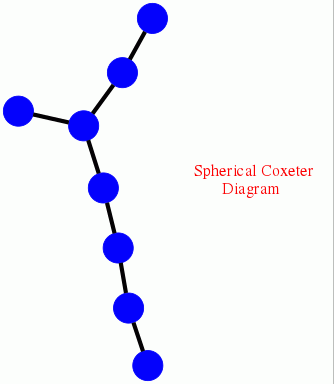
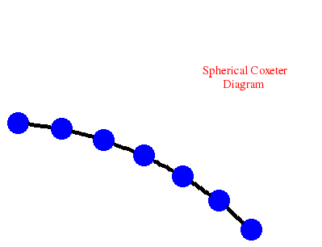
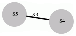

The following example computes the fourth integral cohomomogy of the Mathieu group \(M_{24}\).
\(H^4(M_{24},\mathbb Z) = \mathbb Z_{12}\)
gap> GroupCohomology(MathieuGroup(24),4); [ 4, 3 ]
The following example computes the third integral homology of the Weyl group \(W=Weyl(E_8)\), a group of order \(696729600\).
\(H_3(Weyl(E_8),\mathbb Z) = \mathbb Z_2 \oplus \mathbb Z_2 \oplus \mathbb Z_{12}\)
p> L:=SimpleLieAlgebra("E",8,Rationals);;
gap> W:=WeylGroup(RootSystem(L));;
gap> Order(W);
696729600
gap> GroupHomology(W,3);
[ 2, 2, 4, 3 ]
The preceding calculation could be achieved more quickly by noting that \(W=Weyl(E_8)\) is a Coxeter group, and by using the associated Coxeter polytope. The following example uses this approach to compute the fourth integral homology of \(W\). It begins by displaying the Coxeter diagram of \(W\), and then computes
\(H_4(Weyl(E_8),\mathbb Z) = \mathbb Z_2 \oplus \mathbb Z_2 \oplus Z_2 \oplus \mathbb Z_2\).
gap> D:=[[1,[2,3]],[2,[3,3]],[3,[4,3],[5,3]],[5,[6,3]],[6,[7,3]],[7,[8,3]]];; gap> CoxeterDiagramDisplay(D);

gap> polytope:=CoxeterComplex_alt(D,5);; gap> R:=FreeGResolution(polytope,5); Resolution of length 5 in characteristic 0 for <matrix group with 8 generators> . No contracting homotopy available. gap> C:=TensorWithIntegers(R); Chain complex of length 5 in characteristic 0 . gap> Homology(C,4); [ 2, 2, 2, 2 ]
The following example computes the sixth mod-\(2\) homology of the Sylow \(2\)-subgroup \(Syl_2(M_{24})\) of the Mathieu group \(M_{24}\).
\(H_6(Syl_2(M_{24}),\mathbb Z_2) = \mathbb Z_2^{143}\)
gap> GroupHomology(SylowSubgroup(MathieuGroup(24),2),6,2); [ 2, 2, 2, 2, 2, 2, 2, 2, 2, 2, 2, 2, 2, 2, 2, 2, 2, 2, 2, 2, 2, 2, 2, 2, 2, 2, 2, 2, 2, 2, 2, 2, 2, 2, 2, 2, 2, 2, 2, 2, 2, 2, 2, 2, 2, 2, 2, 2, 2, 2, 2, 2, 2, 2, 2, 2, 2, 2, 2, 2, 2, 2, 2, 2, 2, 2, 2, 2, 2, 2, 2, 2, 2, 2, 2, 2, 2, 2, 2, 2, 2, 2, 2, 2, 2, 2, 2, 2, 2, 2, 2, 2, 2, 2, 2, 2, 2, 2, 2, 2, 2, 2, 2, 2, 2, 2, 2, 2, 2, 2, 2, 2, 2, 2, 2, 2, 2, 2, 2, 2, 2, 2, 2, 2, 2, 2, 2, 2, 2, 2, 2, 2, 2, 2, 2, 2, 2, 2, 2, 2, 2, 2, 2 ]
The following example constructs the Poincare polynomial
\(p(x)=\frac{1}{-x^3+3*x^2-3*x+1}\)
for the cohomology \(H^\ast(Syl_2(M_{12},\mathbb F_2)\). The coefficient of \(x^n\) in the expansion of \(p(x)\) is equal to the dimension of the vector space \(H^n(Syl_2(M_{12},\mathbb F_2)\). The computation involves Singular's Groebner basis algorithms and the Lyndon-Hochschild-Serre spectral sequence.
gap> G:=SylowSubgroup(MathieuGroup(12),2);; gap> PoincareSeriesLHS(G); (1)/(-x_1^3+3*x_1^2-3*x_1+1)
The following example constructs the polynomial
\(p(x)=\frac{x^4-x^3+x^2-x+1}{x^6-x^5+x^4-2*x^3+x^2-x+1}\)
whose coefficient of \(x^n\) is equal to the dimension of the vector space \(H^n(M_{11},\mathbb F_2)\) for all \(n\) in the range \(0\le n\le 14\). The coefficient is not guaranteed correct for \(n\ge 15\).
gap> PoincareSeriesPrimePart(MathieuGroup(11),2,14); (x_1^4-x_1^3+x_1^2-x_1+1)/(x_1^6-x_1^5+x_1^4-2*x_1^3+x_1^2-x_1+1)
The following example computes
\(H_4(N,\mathbb Z) = \mathbb (Z_3)^4 \oplus \mathbb Z^{84}\)
for the free nilpotent group \(N\) of class \(2\) on four generators.
gap> F:=FreeGroup(4);; N:=NilpotentQuotient(F,2);; gap> GroupHomology(N,4); [ 3, 3, 3, 3, 0, 0, 0, 0, 0, 0, 0, 0, 0, 0, 0, 0, 0, 0, 0, 0, 0, 0, 0, 0, 0, 0, 0, 0, 0, 0, 0, 0, 0, 0, 0, 0, 0, 0, 0, 0, 0, 0, 0, 0, 0, 0, 0, 0, 0, 0, 0, 0, 0, 0, 0, 0, 0, 0, 0, 0, 0, 0, 0, 0, 0, 0, 0, 0, 0, 0, 0, 0, 0, 0, 0, 0, 0, 0, 0, 0, 0, 0, 0, 0, 0, 0, 0, 0 ]
The following example computes
\(H_5(G,\mathbb Z) = \mathbb Z_2 \oplus \mathbb Z_2\)
for the \(3\)-dimensional crystallographic space group \(G\) with Hermann-Mauguin symbol "P62"
gap> GroupHomology(SpaceGroupBBNWZ("P62"),5); [ 2, 2 ]
The following example computes
\(H_6(SL_2({\cal O},\mathbb Z) = \mathbb Z_2\)
for \({\cal O}\) the ring of integers of the number field \(\mathbb Q(\sqrt{-2})\).
gap> C:=ContractibleGcomplex("SL(2,O-2)");; gap> R:=FreeGResolution(C,7);; gap> Homology(TensorWithIntegers(R),6); [ 2, 12 ]
The following example computes
\(H_5(G,\mathbb Z) = \mathbb Z_3\)
for \(G\) the classical braid group on eight strings.
gap> D:=[[1,[2,3]],[2,[3,3]],[3,[4,3]],[4,[5,3]],[5,[6,3]],[6,[7,3]]];; gap> CoxeterDiagramDisplay(D);;

gap> R:=ResolutionArtinGroup(D,6);; gap> C:=TensorWithIntegers(R);; gap> Homology(C,5); [ 3 ]
The following example computes
\(H_5(G,\mathbb Z) = \mathbb Z_2\oplus Z_2\oplus Z_2 \oplus Z_2 \oplus Z_2\)
for \(G\) the graph of groups corresponding to the amalgamated product \(G=S_5*_{S_3}S_4\) of the symmetric groups \(S_5\) and \(S_4\) over the canonical subgroup \(S_3\).
gap> S5:=SymmetricGroup(5);SetName(S5,"S5"); gap> S4:=SymmetricGroup(4);SetName(S4,"S4"); gap> A:=SymmetricGroup(3);SetName(A,"S3"); gap> AS5:=GroupHomomorphismByFunction(A,S5,x->x); gap> AS4:=GroupHomomorphismByFunction(A,S4,x->x); gap> D:=[S5,S4,[AS5,AS4]]; gap> GraphOfGroupsDisplay(D);

gap> R:=ResolutionGraphOfGroups(D,6);; gap> Homology(TensorWithIntegers(R),5); [ 2, 2, 2, 2, 2 ]
generated by GAPDoc2HTML